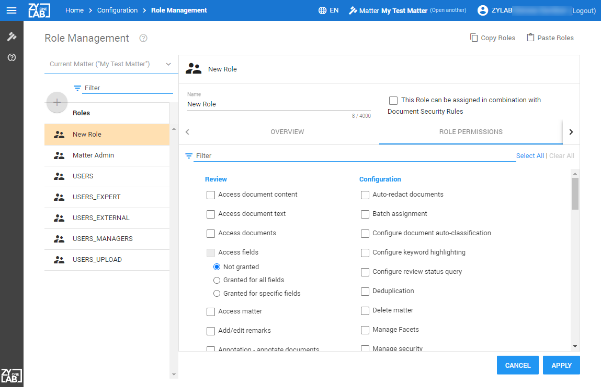
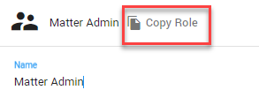

On the home page, select Configuration:

Select Role Management:

Create, delete or edit roles and add/remove permissions to/from roles. Roles are assigned to users.
On the home page, select Configuration:
Select Role Management:
Select the scope (role type).
Global roles (eDiscovery or Legal Review) assigned to users/groups apply to all matters. Matter roles apply to one specific matter. Also, Matter Roles can be configured to be assigned in combination with Document Security Rules. This allows you to control who has access to specific documents.
Filter on the role types if needed.

Select Create a New Role:
Define a name for the role.
If this role is assigned to user (groups) in combination with Document Security Rules, select the checkbox 'This Role can be assigned in combination with Document Security Rules'.

In the Role Permissions tab, select the permissions for this role.
If you selected the checkbox 'This Role can be assigned in combination with Document Security Rules', then you can create the role 'Search Documents'. This role allows users to search documents, but not to view them and perform actions on them. This role can then be assigned to user (groups)—see User Management). When no Document Security rules have been created (and/or have not been combined with a role), users assigned with this role will have access to all documents.
|
|
Note: Metadata (Properties) are not part of Document Security. |
Click Apply.
Select a role type (filter if needed).

Select a role (filter if needed).
Select the Delete icon.
Select a role type (filter if needed).
Select a role (filter if needed).
In the Overview tab, see the selected permissions for this role.
In the Role Permissions tab, change the permissions.
Click Apply.
Once a role has been created, it can be copied and pasted into other matters reducing the time needed to create roles in each matter.
To copy one role, select the Role and click Copy Role.

To select all Roles, click Copy Roles located in the upper right of your window.

Open the new matter.
Select Configuration
Select Role Management
Select Paste Roles located in the upper right of your window.

|
|
Note: When Paste Rule(s) does not work, try Ctrl+V. Shortcut keys such as Ctrl C and Ctrl V may not work for all users. The Copy and Paste buttons should be used in that instance. |
Duplicate roles are not allowed. If a role already exists, the following message will appear: